Sei 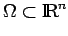 ein beschränktes Gebiet (d.h. eine offene zusammenhängende Menge) mit hinreichend glattem Rand 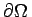. Für n=1 oder n=2,3 stelle man sich  etwa als ein Intervall (a,b) oder eine konvexe Menge vor. Eine Funktion 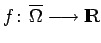 nennt man k-mal stetig differenzierbar in dem abgeschlossenen Gebiet 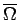, wenn
etwa als ein Intervall (a,b) oder eine konvexe Menge vor. Eine Funktion 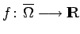 nennt man k-mal stetig differenzierbar in dem abgeschlossenen Gebiet 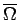, wenn
mit anderen Worten, jede partielle Ableitung von f ist stetig auf den Rand von  fortsetzbar und ist eine stetige Funktion auf 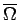.
fortsetzbar und ist eine stetige Funktion auf 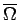.
In diesem Vektorraum wird mit dem LEBESGUE-Maß  im
im  die folgende Norm eingeführt:
die folgende Norm eingeführt:
| 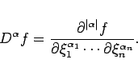 | (12.91) |
Der normierte Raum ist nicht vollständig. Seine Vervollständigung wird mit 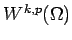 oder im Falle von p=2 mit 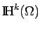 bezeichnet und heißt SOBOLEW-Raum.